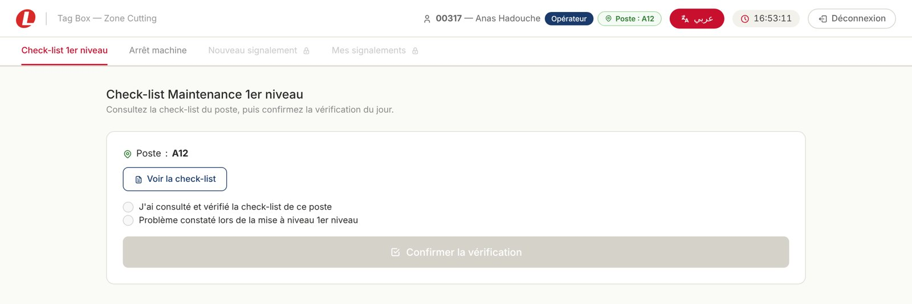
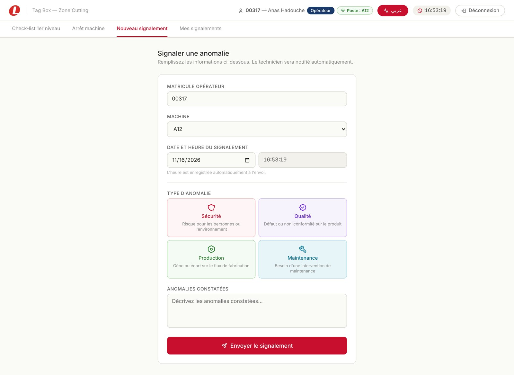
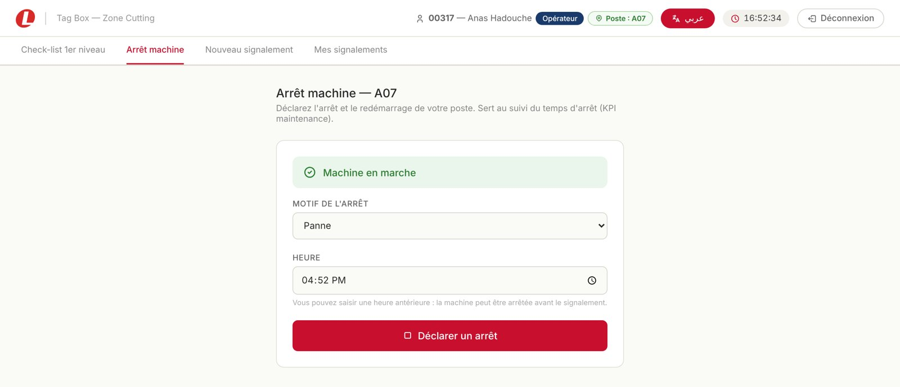
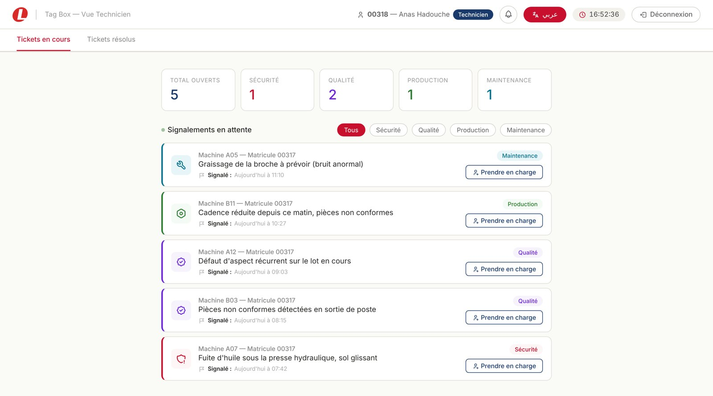
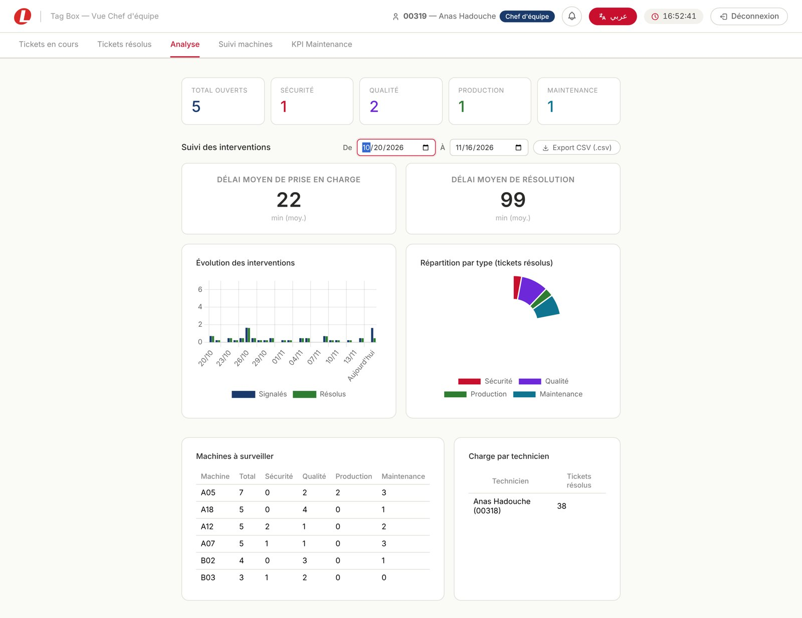
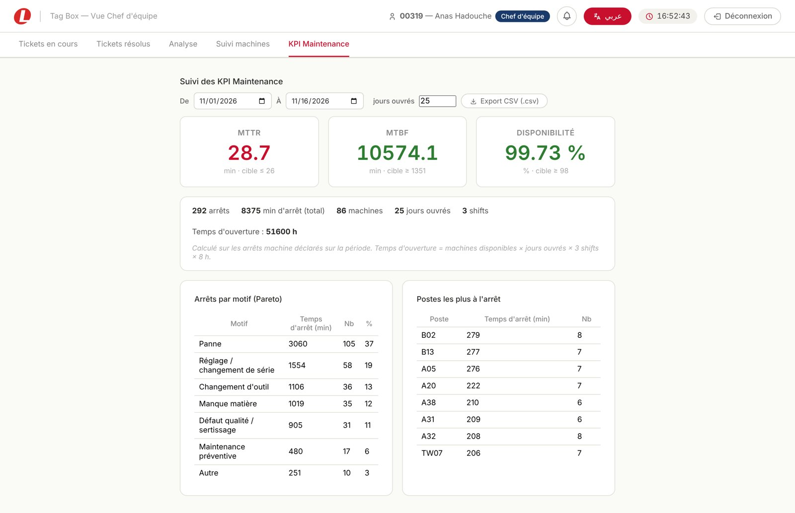
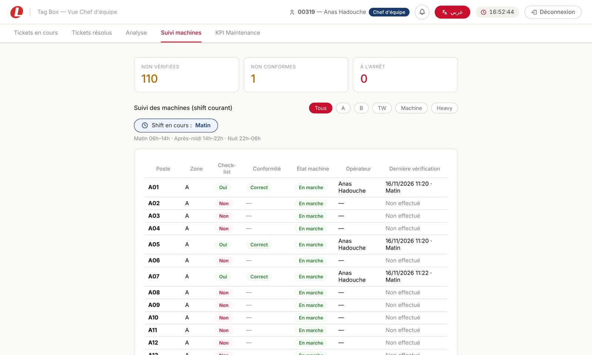
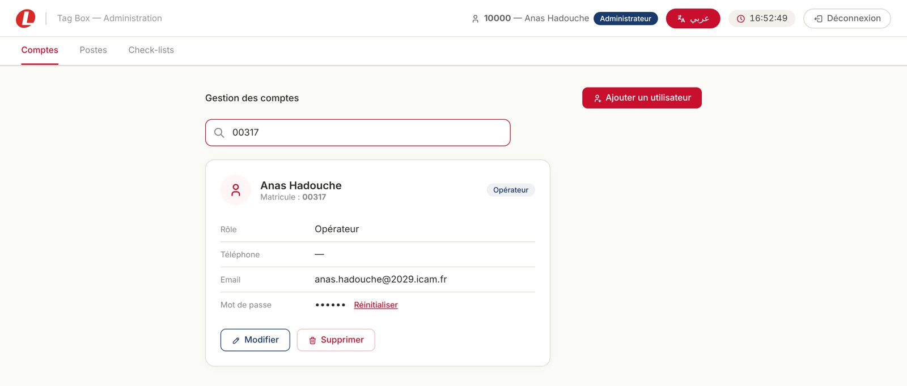
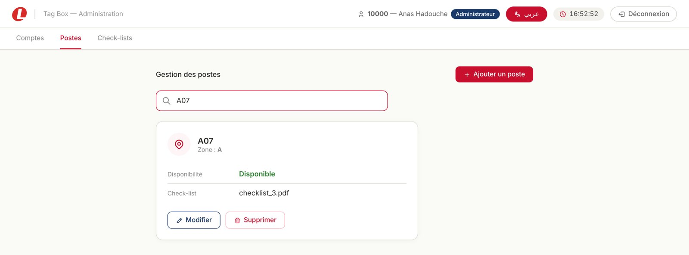

Un système papier à digitaliser
Dans la zone de coupe de Lear Corporation à Meknès, le signalement des problèmes (pannes, non-conformités, incidents) se faisait entièrement sur papier via des "Tag Box". Ce système engendrait des pertes d'information, des délais de traitement et rendait impossible tout suivi en temps réel des indicateurs de performance (OEE, TRS).
Une application web full-stack
Développement d'une application web interne qui remplace le système papier. Elle relie les tablettes des postes, le PC du chef d'équipe et ceux des techniciens : signalements, suivi, résolution et analyse des données en temps réel.
Opérateur · Technicien · Chef d'équipe · Administrateur — chaque rôle a ses droits et ses vues.
L'opérateur signale une anomalie (Sécurité, Qualité, Production, Maintenance) ; le technicien la prend en charge, la résout et documente l'action.
Check-list de maintenance par poste et par shift (PDF), remise à zéro automatique à chaque changement de shift.
Déclaration des arrêts et redémarrages, calcul du MTTR, du MTBF et de la disponibilité, Pareto et export CSV.
Cloche in-app et email optionnel : le chef d'équipe est prévenu à chaque signalement, le technicien à chaque assignation.
Interface en français et en arabe (affichage de droite à gauche), fonctionne sans accès Internet.
L'application en images
Captures réalisées avec des données de test.










Le projet sur GitHub
Le code complet et la documentation (installation, architecture, base de données, guide par rôle) sont disponibles sur le dépôt GitHub.